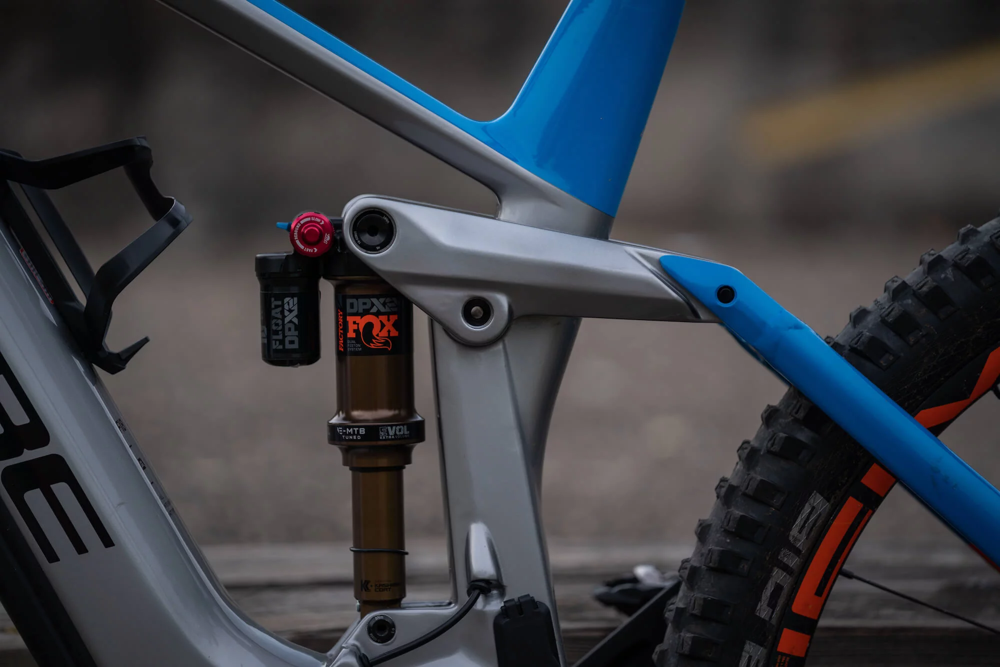
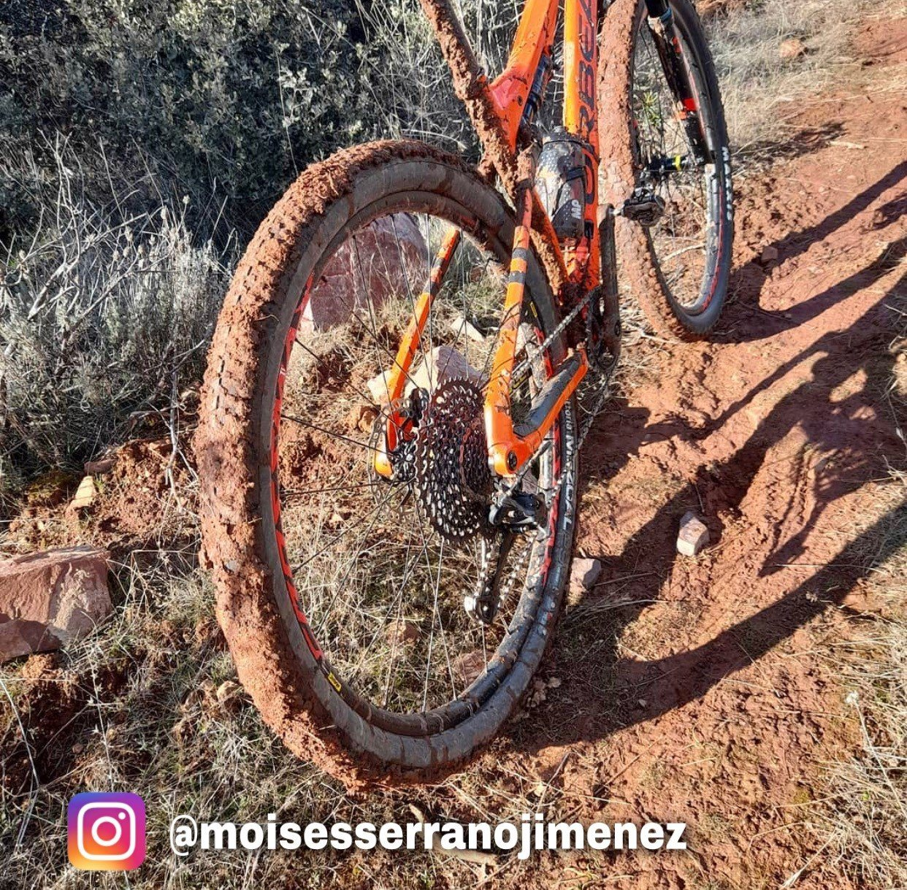

Equipamiento TécnicoLos cuadros de montaña exigen suspensiones neumáticas delanteras y traseras con bloqueos hidráulicos para terrenos complejos. Los frenos de disco de cuatro pistones aseguran un frenado inmediato en lodo o bajadas empinadas de piedra suelta. |
 |
|
 |
Llantas y TracciónSe emplean neumáticos anchos con tacos pronunciados laterales que muerden el suelo en curvas cerradas. La tecnología tubeless evita ponchaduras por espinas, permitiendo rodar con menor presión de aire para ganar agarre mecánico. |